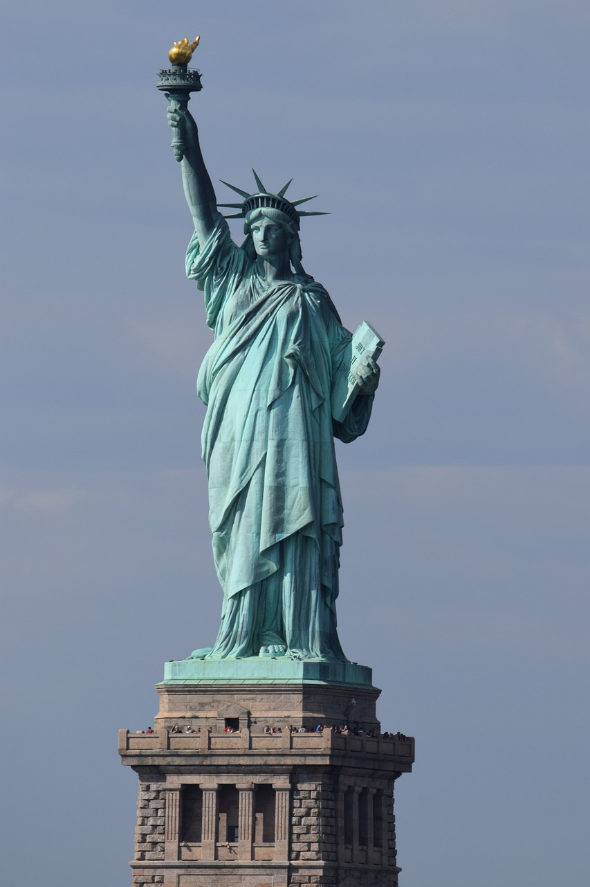
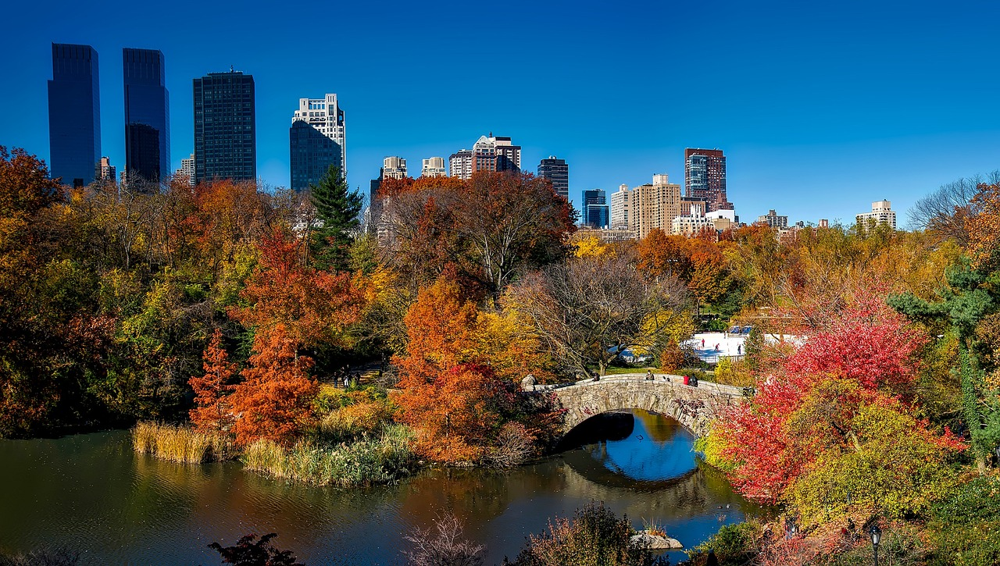
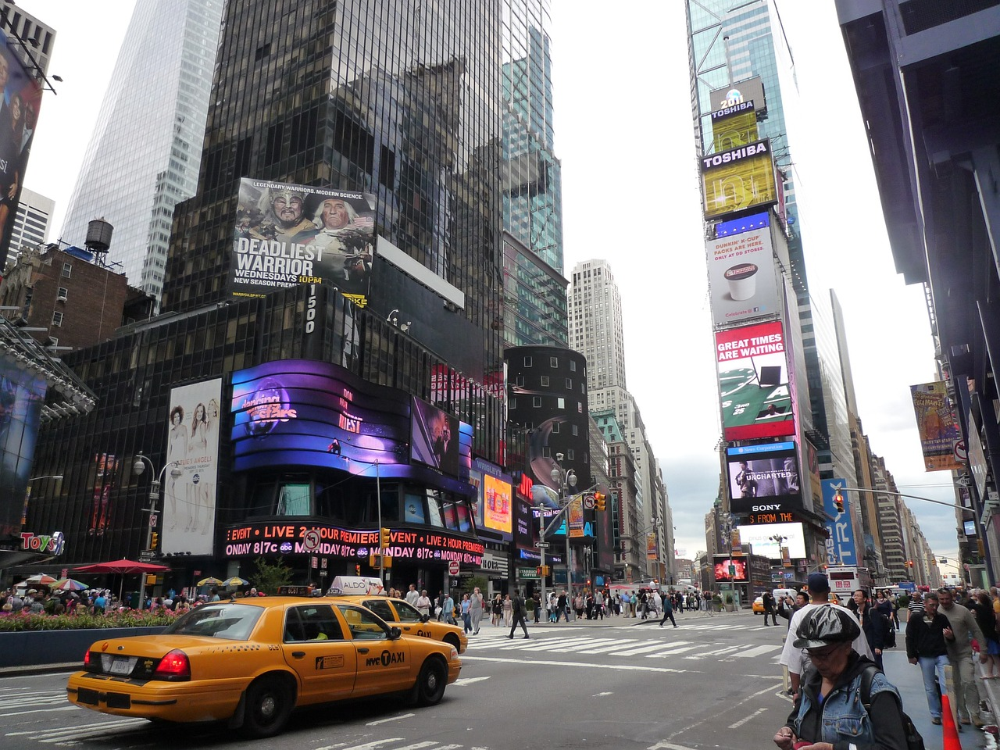

הקדמה
ניו יורק היא אחת הערים המרגשות ביותר בעולם, מלאה באטרקציות, תרבות ואוכל מעולה. זהו היעד המושלם לכל סוג של טיול.
הטיול שלי בניו יורק היה בשנת 2012, כאשר הייתי בן 11.
אטרקציות
- פסל החירות
 - סנטרל פארק
 - טיימס סקוור
 - ברודוויי
אוכל
העיר מציעה מגוון רחב של מאכלים מכל העולם. כמה מהמנות הפופולריות כוללות:
- פיצה ניו יורקית
- בייגל עם שמנת
- המבורגר
- נקניקיות
- מאכלים אסייתיים ברחובות צ'יינהטאון
טיפים
כדי ליהנות מהטיול שלך בניו יורק, הנה כמה טיפים חשובים:
- תכנן את המסלול מראש כדי לחסוך זמן.
- השתמש בתחבורה ציבורית כדי להתנייד בקלות ובזול.
- לבש נעליים נוחות להליכה.
- הבא מטען נייד לטלפון שלך.
- תיהנה מהמגוון התרבותי והקולינרי של העיר.